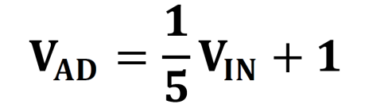

DMA使用之DAC波形发生器(AN108)#
前面讲过了利用DMA进行环通测试，了解DMA的读写控制，本章利用DMA读通道向DAC写波形数据，实现DA转换，并用示波器观察波形，并通过PS端的按键进行波形的切换，实现简单的波形发生器。实验中使用的ADDA模块型号为AN108，ADC最大采样率32Mhz，精度为8位，DAC最大采样率125Mhz，精度为8位。
{kind=link}
ADDA模块
实验原理#
{kind=link}
数模转换电路#
如硬件结构图所示，DA电路由高速DA芯片、7阶巴特沃斯低通滤波器、幅度调节电路和信号输出接口组成。
我们使用的高速DA芯片是AD公司推出的AD9708。AD9708是8位，125MSPS的DA转换芯片，内置1.2V参考电压，差分电流输出。芯片内部结构图如下图所示
{kind=link}
AD9708芯片差分输出以后，为了防止噪声干扰，电路中接入了7阶巴特沃斯低通滤波器，带宽为40MHz，频率响应如下图所示
{kind=link}
滤波器参数如下图所示

滤波器之后，我们使用了2片高性能145MHz带宽的运放AD8056，实现差分变单端，以及幅度调节等功能，使整个电路性能得到了最大限度的提升。幅度调节，使用的是5K的电位器，最终的输出范围是-5V~5V（10Vpp）。
注：由于电路器的精度不是很精确，最终的输出有一定误差，有可能波形幅度不能达到10Vpp，也有可能出现波形削顶等问题，这些都属正常情况。
模数转换（AD）电路#
如硬件结构图中所示，AD电路由高速AD芯片、衰减电路和信号输入接口组成。
我们使用的高速AD芯片是由AD公司推出的8位，最大采样率32MSPS的AD9280芯片。内部结构图如下图所示
{kind=link}
根据下图的配置，我们将AD电压输入范围设置为：0V~2V
{kind=link}
在信号进入AD芯片之前，我们用一片AD8056芯片构建了衰减电路，接口的输入范围是-5V~+5V(10Vpp)。衰减以后，输入范围满足AD芯片的输入范围（0~2V）。转换公式如下：
{kind=link}
当输入信号Vin=5(V)的时候，输入到AD的信号Vad=2(V)；
当输入信号Vin=-5(V)的时候，输入到AD的信号Vad=0(V)；
硬件环境搭建#
搭建硬件#
本实验基于DMA的环通测试工程设计。添加时钟输出给DAC，设置为DAC的最大时钟频率125MHz。将FCLK_CLK0的时钟设置为150MHz，提高AXI的带宽能力。
{kind=link}
删除AXI Stream Data FIFO, 设置DMA如下，只打开读通道，将Stream Data Width设置为8，因为DAC数据宽度是8位。
{kind=link}
加入了自定义IP，作用是将AXI Stream数据缓存到FIFO中，再从FIFO中读出数据发送到DAC，并将DAC数据输出到端口。在程序中设置一旦start信号有效，就开始从FIFO中读出数据送到DAC接口。因为AXI写FIFO的带宽比DAC带宽大，所以能够保证读出的DAC数据连续。自定义IP在ip_repo文件夹中。
{kind=link}
将DAC时钟引出如下
{kind=link}
添加复位模块，用于dac模块的复位
{kind=link}
连接对应的信号，最终连接结果如下：
{kind=link}
AX7Z020和AX7Z010开发板需要导出1位的EMIO连接到PL端的按键

之后Generate Output Products
{kind=link}
绑定DAC引脚，编译产生bit文件，并Export Hardware.
DAC自定义IP功能介绍#
由于需要将波形数据通过DMA传输到DAC，与DMA的接口为AXIS流接口，因此需要将AXIS流数据转换成DAC数据，同时DAC的时钟与AXIS时钟频率不同，因此需要添加FIFO进行跨时钟域数据处理。同时需要实现AXIS Slave功能。工作流程为：
ARM配置DAC的启动寄存器和数据长度寄存器。
DMA使用AXIS接口将数据写入FIFO
DAC状态机查询FIFO中有一定数据后，开始将数据读出。由于AXIS的时钟频率较快，可以保证DAC读出的数据连续。
自定义IP端口映射#
在做自定义IP时，对于总线接口，我们可以将其信号封装成接口，避免信号一个个地连接。在本实验中，需要封装axis slave接口，在Ports and Interfaces界面中，选择需要封装的信号，右键选择Add Bus Interface
{kind=link}
弹出窗口，点击浏览
{kind=link}
选择需要封装的总线类型，这里选择axis_rtl，点击OK
{kind=link}
在Name中输入名称，Mode中选择模式，本实验中选择slave

在Port Mapping界面进行映射，左边为总线信号名称，右边为代码中的信号名称，选中点击Map Ports映射，并将剩余的信号一一映射，最后点击OK。
{kind=link}
可以在Ports and Interfaces中看到封装成了总线形式。
{kind=link}
当然也可以对于其他信号进行映射，前提是对这些映射端口比较熟悉。
Vitis程序开发#
在Vitis程序中加入了wave.c和wave.h，作用是产生波形，共加入了五种波形函数，正弦波，方波，三角波，锯齿波，负锯齿波，也可添加其他波形函数。
{kind=link}
送到DAC的数据均为无符号数，由于电路设计时，输出部分做了反向，因此如果数据是0x00对应的电压是正的最大值，而0xFF为负的最大值。
{kind=link}
SetInterruptInit函数中断设置，打开中断控制器
{kind=link}
KeySetup函数进行按键设置，进行PS按键的设置，注册中断，使能按键中断
{kind=link}
在XAxiDma_Initial函数中，打开MM2S中断
在XAxiDma_DAC函数中，初始状态下，首先向DAC写正弦波数据，并向AD9708_START寄存器写1，使能start信号，开始运行AD9708的状态机，之后AD9708一直处于发送状态。
在XAxiDma_DAC函数中的while语句，key_flag由按键中断产生，表示有按键按下，如果有按键按键下，切换波形函数，并再次刷新到内存中。
在DMA中断服务函数DAC_Interrupt_Handler中，启动下一次DMA传输
宏定义中的MAX_AMP_VAL为最大振幅值，由于DAC数据宽度为8，因此设为256，不要改变。AMP_VAL值为当前的振幅值，可改变当前显示的振幅，注意不要大于256。
{kind=link}
{kind=link}
{kind=link}
{kind=link}
{kind=link}
添加math.h库#
注意：在程序中用到了math.h的函数，需要做以下设置才能使用，右键点开C/C++ Build Settings选项
{kind=link}
在Settings选项的Libraries添加m，点击OK
{kind=link}
板上验证#
连接AN108模块到扩展口如下，注意模块的1脚与扩展口的1脚对齐，使用专用屏蔽线连接到DA输出口，另一端连接到示波器上。
{kind=link}
AX7015硬件连接图

AX7021硬件连接图（扩展口J15）
{kind=link}
AX7020/AX7010硬件连接图（扩展口J11）
{kind=link}
AX7Z035/AX7Z100硬件连接图
{kind=link}
AX7Z020/AX7Z010硬件连接图（扩展口J21）
{kind=link}
注意1脚对齐
下载程序
{kind=link}
此时示波器上默认显示正弦波
{kind=link}
按下按键进行波形的切换（AX7015开发板为PS_KEY；AX7021开发板为KEY1；AX7020/AX7010开发板为PS KEY1；AX7Z035/AX7Z100开发板为KEY1，AX7Z020/AX7Z010为KEY1）
{kind=link}
也可通过AN108上的电位器调节波形的幅度
本章小结#
本章介绍了通过DMA发送波形数据给DAC，并用示波器观察波形，是波形发生器的雏形，主要知识点为DMA中断的使用，AXI Stream到DAC数据的转换等。